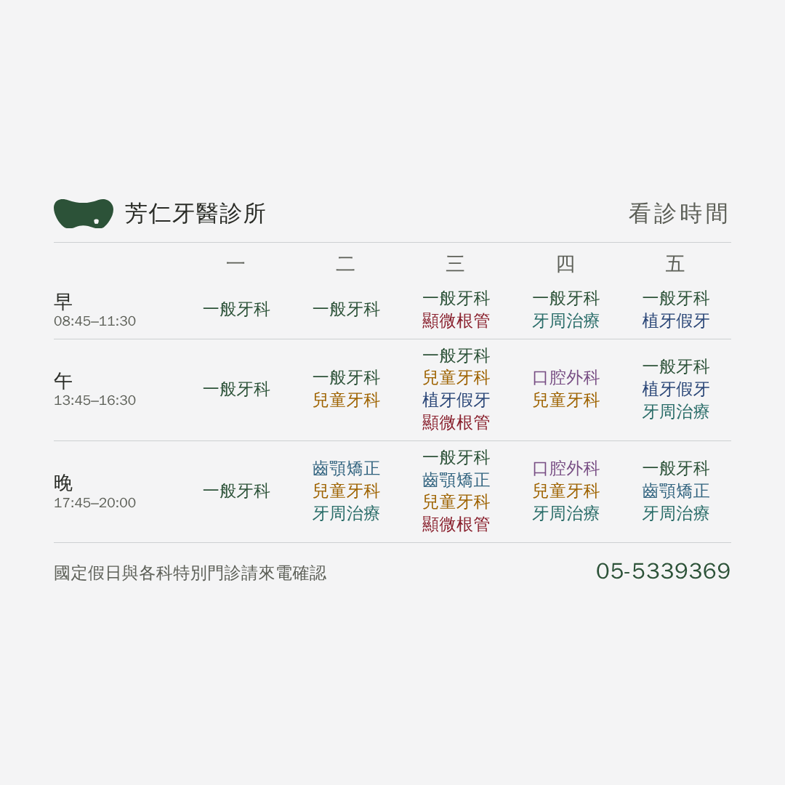

LINE 貼文的看診時間圖 兩案待選 2026-09-07
站上那張表靠點科別標記一次看一科。
貼文是靜態的圖，但畫布 1080px 放得下，所以不模擬切換，直接攤開。
Ⓛ 一科一行建議 早／午／晚 各列出哪幾天

病人查的是「我這一科什麼時候可以來」。
顯微根管排出來是「早三 午三 晚三」——全在週三自己跳出來，格子表看不出來。
Ⓖ 格子 和站上那張表同一個排法

看得出「同一節有誰一起看診」。
⚠「植牙・假牙重建」被格子寬度逼成「植牙假牙」——要你點頭。
擺進主頁那三格 大格 2:1、小格 1:1

大格會把 1080 的圖上下各切掉 271 列，所以識別與電話
收在中間那條帶子裡。
⚠ 到底是裁還是留白我們沒驗過——表單右上角那顆
預覽按一下就有答案。兩案哪一種都成立。
「詳情」欄要貼的字
一週的門診時段，以及每一節有哪些科別。
早 08:45–11:30 午 13:45–16:30 晚 17:45–20:00
國定假日與各科特別門診請來電確認 05-5339369
排班、時段、電話都是從站上 index.html 讀回來的，
不重打——診所改排班，重跑一次就好。